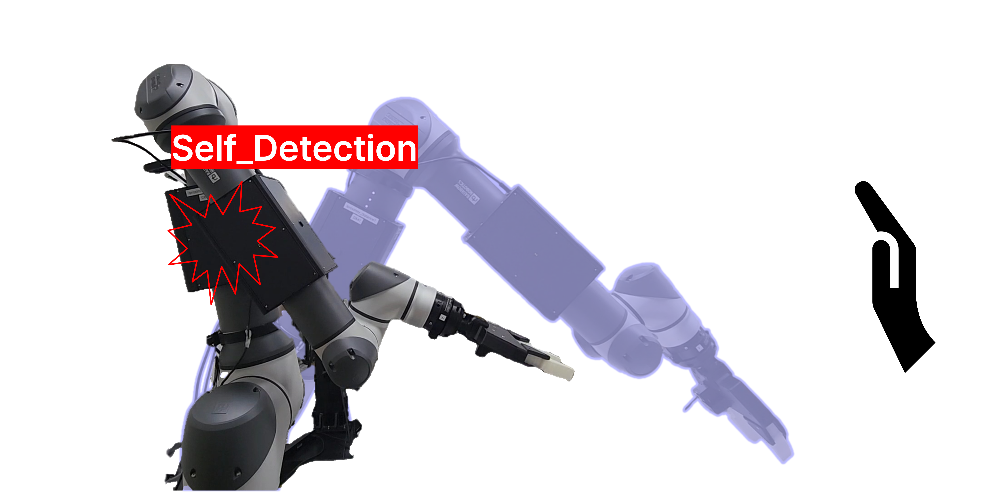
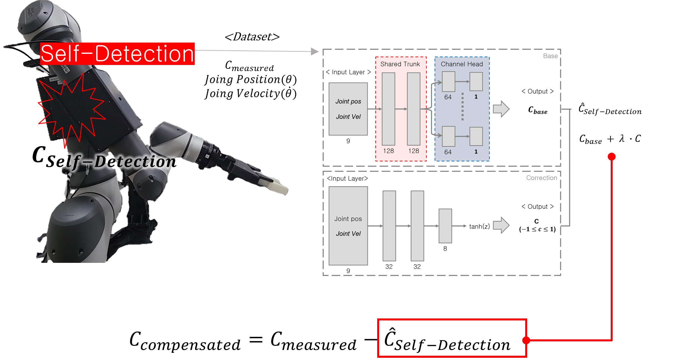
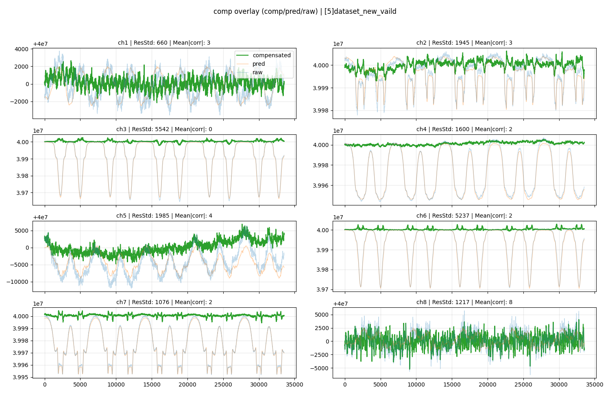

로봇 자세 변화
관절 동작으로 센서와 로봇 링크 사이의 상대 형상이 변합니다.
로봇 상태 기반 정전용량 센싱
관절 상태 · 자체 감지 응답 예측 · 잔차 보상
로봇에 장착된 정전용량 센서는 외부 물체뿐 아니라 로봇 자신의 자세 변화에도 반응했습니다. 관절 위치와 속도로 자체 감지 응답을 예측하고, 이를 측정값에서 제거해 외부 물체에 의한 잔차 신호를 분리했습니다.
문제 정의
자세 변화 · 자체 감지 응답 · 접근 신호 혼재
정전용량 센서는 주변 전기장 변화를 측정합니다. 센서가 로봇 표면에 장착되면 외부 물체가 없어도 링크 사이의 상대 위치가 변하면서 자세에 따른 신호 변화가 발생합니다.

관절 동작으로 센서와 로봇 링크 사이의 상대 형상이 변합니다.
로봇 본체가 만든 정전용량 변화가 측정 신호에 포함됩니다.
외부 물체의 접근과 로봇 자체 응답을 하나의 측정값에서 구분해야 합니다.
데이터 수집
관절 상태 (q, q̇) · 정전용량 응답
자세에 따라 달라지는 자체 감지 응답을 수집하기 위해 두 가지 반복 동작을 구성했습니다. 관절 위치와 속도, 8개 정전용량 센서 채널을 동기화해 기록했습니다.
보상 모델
MLP · 채널별 예측 · 잔차 보정
관절 위치와 속도를 공유 특징 추출부와 채널별 출력부에 입력해 자세에 따라 달라지는 정전용량 자체 감지 응답을 예측했습니다. 이후 보정 분기가 기본 예측값을 보완하고, 채널별 측정값에서 이를 제거했습니다.

보상 결과
RMSE 감소 · 분산 감소 · 8채널 보상
예측 신호가 원신호에 포함된 자세 의존적 자체 감지 응답을 추종하는지 확인했습니다. 이를 채널별 측정값에서 제거해 8개 정전용량 센서에서 로봇 동작에 따른 신호 변동을 줄였습니다.

로봇 자체 감지 응답의 예측 오차 감소
보상 후 자세 의존적인 신호 변동 감소
하나의 공유 모델을 통한 채널별 신호 보상